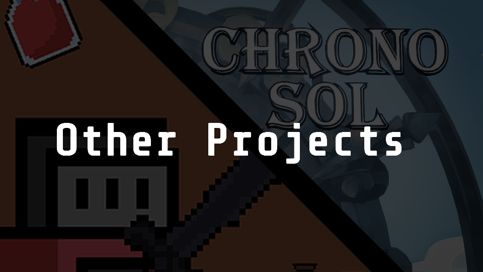
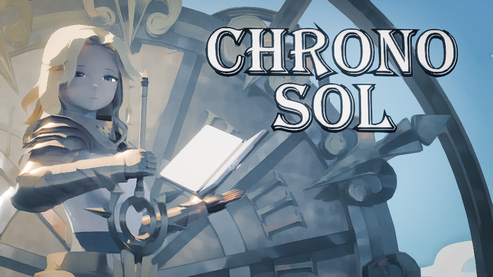
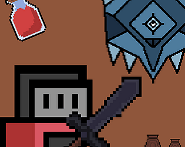

Other Projects


Chrono Sol
Chrono Sol is a game created for the Dutch Summer Game Jam hosted by the Dutch Game Dev Collective. The theme during this game jam was Running out of sunshine. This project was created in a team of 2, were I did everything inside Unity and the other created all the art.
In this game you play as a sun warrior who fights the shadow monsters using your sunlight powers. The part where the theme comes in, is that you do more damage during the day, but the monster does more damage during the night. So the moment you run out of sunlight, is the moment the monster starts becoming more dangerous.
Click on this link to open the itch.io page of the game:
https://meatchips.itch.io/chrono-sol
Dungeon Floor Fighter
Dungeon Floor Fighter is a 2D top-down dungeon crawler which I created during a game design course at school.
The gameplay goes as follows, you spawn in a dungeon and you have to make your way to the boss room to kill the boss and clear the dungeon. After killing a boss, you come across a small market place were you can sell your loot and buy health potions. And then you can go to the next dungeon level, there are 3 dungeon levels (Normal Dungeon, Ice Dungeon, Sand Dungeon) all with different bosses.
Click on this link to open the itch.io page of the game:
https://meatchips.itch.io/dungeon-floor-fighter